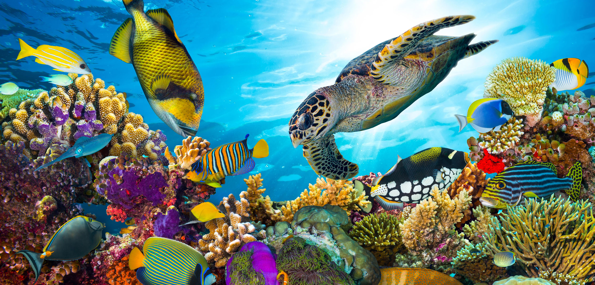

What is Coral Reef Degradation?

Coral reefs are some of the most diverse and valuable ecosystems on Earth, providing critical habitat for nearly 25% of all marine species despite covering less than 1% of the ocean floor. These ecosystems offer numerous benefits to both marine life and humans, serving as natural barriers that protect coastlines from storms and erosion, and supporting millions of livelihoods through tourism, fisheries, and food resources. Additionally, they contribute to global economies by providing essential ecosystem services and supporting marine biodiversity.
However, coral reefs around the world are facing a significant threat: degradation. Coral reef degradation refers to the process of decline in the health, structure, and biodiversity of coral reef ecosystems. This degradation is often the result of a combination of natural stressors, such as storms and diseases, as well as human-induced factors like pollution, overfishing, and climate change. These human activities, particularly rising sea temperatures and ocean acidification due to global warming, have accelerated the deterioration of coral reefs, making them more vulnerable to bleaching events and reduced ability to recover.
As coral reefs degrade, the marine life that depends on them for survival is also impacted, leading to a loss of biodiversity and disruption of food chains. This decline not only affects marine ecosystems but also threatens human populations who rely on coral reefs for food, economic activities, and coastal protection. The degradation of coral reefs represents a global environmental issue, highlighting the urgent need for conservation efforts to protect and restore these vital ecosystems.
What Can You Do?
Learn about coral reef degradation and how you can help protect these vital ecosystems. Small actions can lead to significant changes.
Video Credits: 6 Simple Steps to Save the Reef | Protect the Great Barrier Reef!
We are World Change,
Disclaimer
This digital page is part of a school project aimed at raising awareness about coral reef degradation. All images and videos used are credited to their respective owners, and this project does not aim to infringe on any copyrights. For educational purposes only.